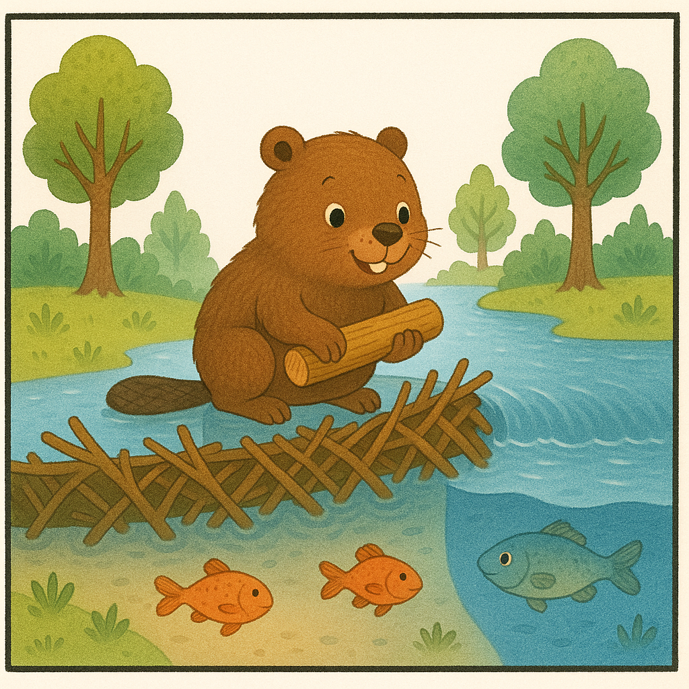
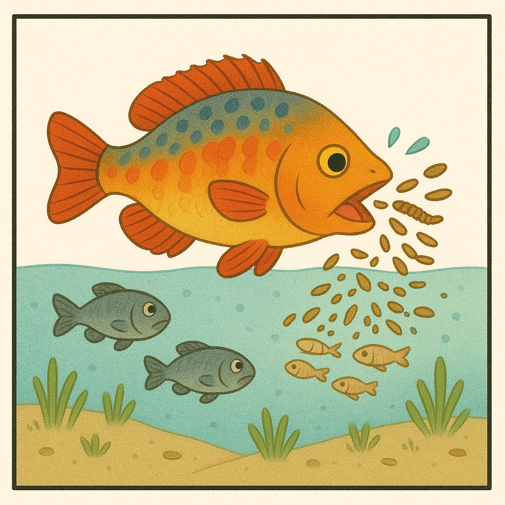
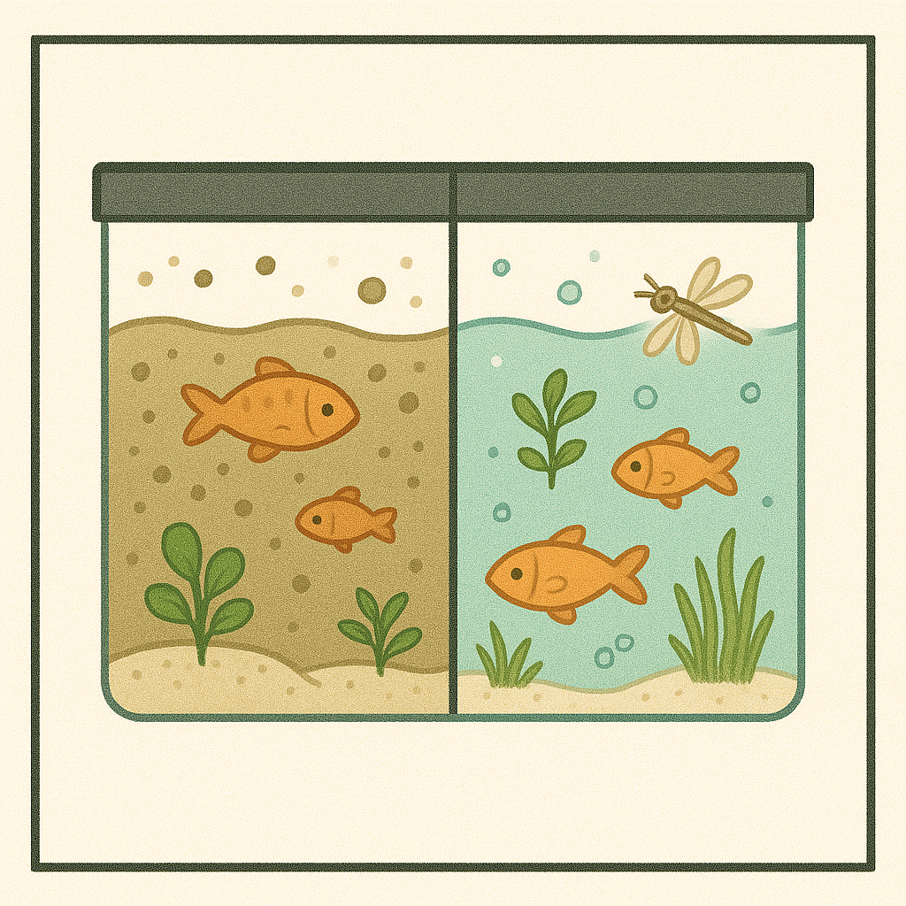
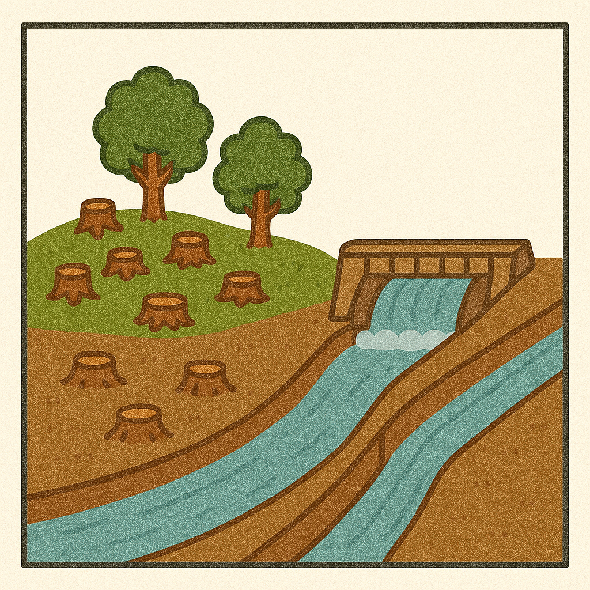
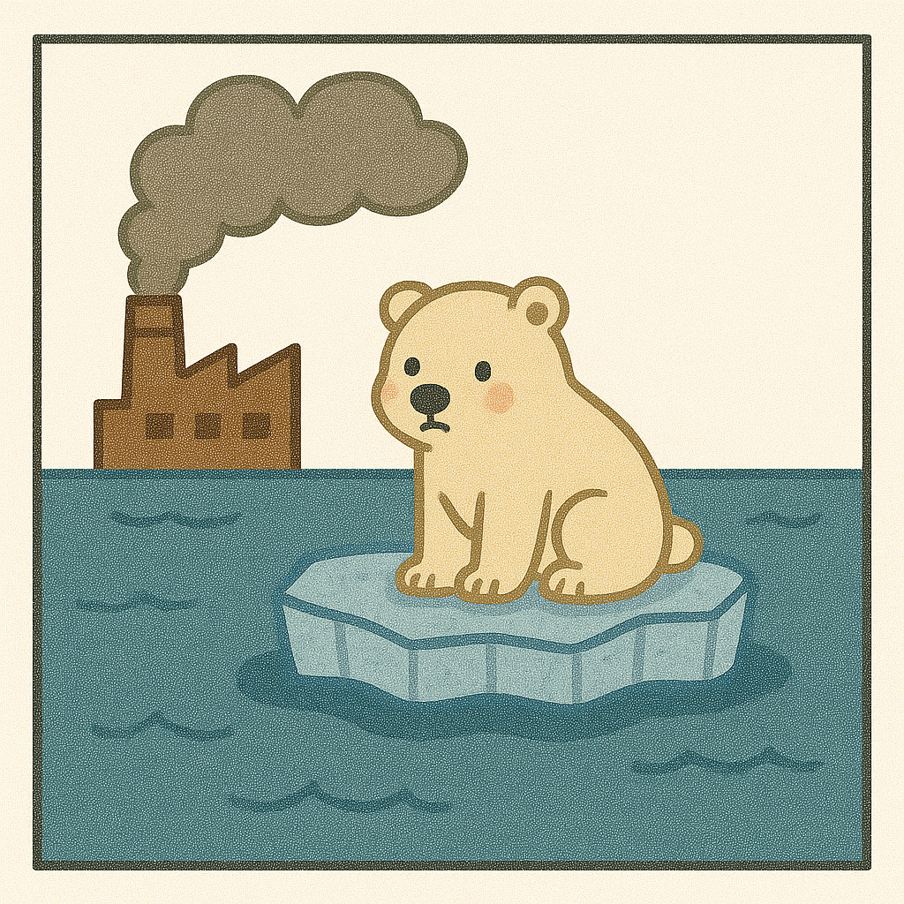
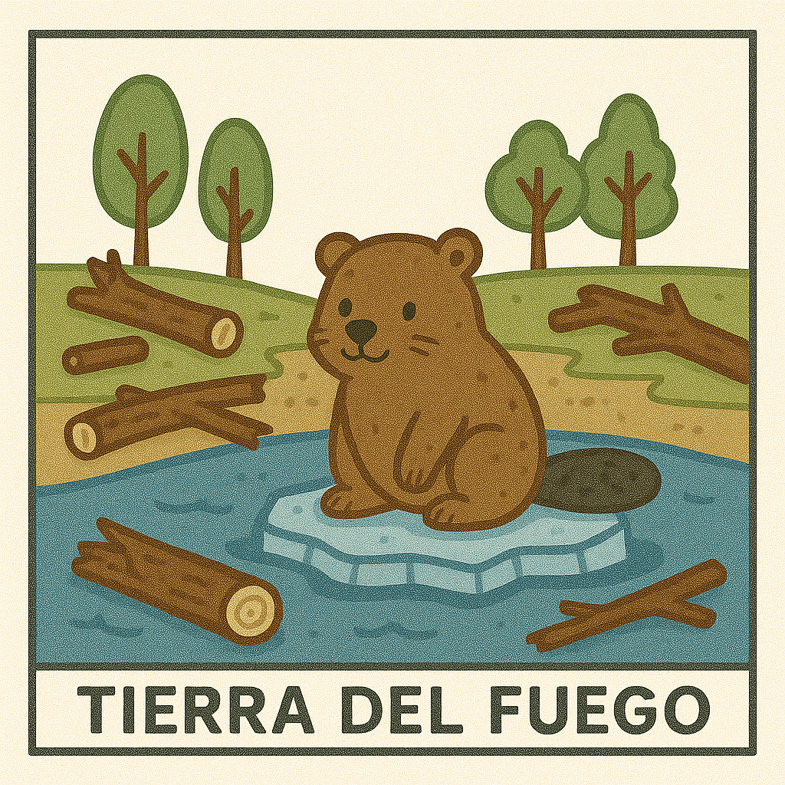

⬅ Volver a Ciencias Naturales
Impacto de los seres vivos
Introducción
Los individuos de una especie no solo se relacionan entre sí, sino también con otras especies de la comunidad y con el ambiente en el que habitan. Sus actividades modifican constantemente esos espacios y también influyen en todo el ecosistema.
Modificaciones del ambiente
Algunos seres vivos modifican el ambiente donde viven para adaptarlo a sus necesidades.
Ejemplo: El castor construye represas que interrumpen el cauce del agua, modifica el ecosistema y puede alterar el ambiente que antes existía. Se lo llama ingeniero del ecosistema.

Alteraciones de las relaciones
Cuando una especie nueva llega a un ecosistema, puede modificar las relaciones entre los organismos que ya vivían allí.
Ejemplo: Un pez exótico introducido en una laguna se alimenta de larvas de insectos y peces pequeños. Esto puede hacer que desaparezcan otras especies e impacta en toda la cadena alimentaria.

Ingenieros ambientales y colonizadores
Algunas especies vegetales y animales pueden formar nuevas comunidades en un ambiente.
Ejemplo: Los musgos son de las primeras plantas en aparecer en ambientes difíciles. Permiten que luego se instalen otras especies al formar suelo fértil y mejorar las condiciones de luz y humedad.
Dato curioso
¿Sabías que…?
Algunos peces pueden vivir en las aguas residuales de una ciudad. Cuando el agua empieza a mejorar, aparecen insectos, plantas y más peces. ¡Las bacterias y algas también ayudan a recuperar el ambiente!

Juego: ¿Quién modifica el ambiente?
Haz clic en cada personaje y responde:
¿Y nosotros?
Las personas también impactamos el ambiente. ¿Qué cosas podés hacer para que ese impacto sea positivo?
- Plantar árboles 🌳
- No arrojar basura 🗑️
- Cuidar el agua 💧
- Proteger animales 🐢
Cuadro sinóptico: ¿Cómo impactan los seres vivos el ambiente?
graph TD
A["Seres vivos"] --> B["Modifican el ambiente"]
A --> C["Alteran relaciones"]
A --> D["Permiten nuevas comunidades"]
B --> E["Ejemplo: Castor"]
C --> F["Ejemplo: Pez invasor"]
D --> G["Ejemplo: Musgos"]
Tabla comparativa de ejemplos
| Acción/Impacto |
Ejemplo |
¿Qué cambia? |
¿A quién afecta? |
| Modifica el ambiente | 🦫 Castor | Construye represa | Agua, peces, árboles |
| Altera relaciones | 🐟 Pez invasor | Se come larvas y peces | Otras especies, cadena |
| Permite nuevas comunidades | 🌱 Musgos | Forma suelo fértil | Otras plantas, animales |
| Recupera ambientes | 🦠🌱 Bacterias/algas | Mejoran el agua | Peces, insectos, plantas |
Línea de tiempo visual: Recuperación del ambiente
Agua sucia
🟤
→
Bacterias y algas
🦠🌱
→
Insectos
🐛
→
Plantas
🌿
→
Peces
🐟
Tarjetas de repaso rápido
🦫
¿Qué hace el castor?Construye represas y cambia el ambiente.
🌱
¿Por qué los musgos son importantes?Permiten que otras especies vivan.
🐟
¿Qué pasa si llega un pez nuevo?Pueden desaparecer otras especies.
Modificaciones humanas
Modificaciones directas
Las personas también modificamos los ambientes. A veces esos cambios son tan grandes que afectan a muchas especies.
Ejemplo: Deforestación, construcción de represas, canalización de ríos. Impactan de forma inmediata en el lugar.

Modificaciones indirectas
Otras actividades humanas impactan indirectamente, como la producción de gases por fábricas y autos, que provocan el calentamiento global.
Ejemplo: El oso polar necesita hielo para vivir, pero el cambio climático reduce el hielo en el Ártico.

Especies invasoras
A veces el ser humano introduce especies en lugares donde no vivían. Si no tienen depredadores, se reproducen mucho y dañan el ambiente.
Ejemplo: Los castores en Tierra del Fuego fueron llevados por el hombre. Allí no tienen depredadores, se reproducen mucho, destruyen bosques y modifican el curso del agua.

Cuadro sinóptico: Impactos humanos y especies invasoras
graph TD
A["Ser humano"] --> B["Modificaciones directas"]
A --> C["Modificaciones indirectas"]
A --> D["Introduce especies invasoras"]
B --> E["Deforestación, represas, ríos"]
C --> F["Calentamiento global"]
D --> G["Castor en Tierra del Fuego"]
Tabla de impactos humanos y especies invasoras
| Acción/Impacto |
Ejemplo |
¿Qué cambia? |
¿A quién afecta? |
| Modificación directa | 🪓🌲 Deforestación | Pierden su hábitat | Animales, plantas |
| Modificación indirecta | 🏭🧊 Calentamiento global | Cambia el clima | Oso polar, especies sensibles |
| Especie invasora | 🦫 Castor en Tierra del Fuego | Destruye bosques, modifica agua | Bosques, animales nativos |